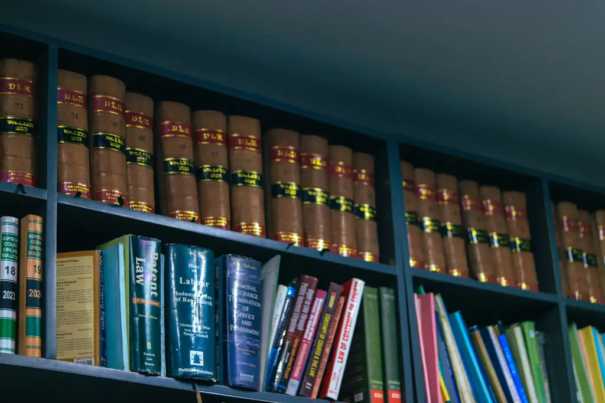

Rosenheim’da göç hukuku avukatı
Dr. Kenan Ertunc M.A., Almanya’da göç hukuku uzman avukatı (Fachanwalt für Migrationsrecht). Aile, iş, ceza ve trafik hukukunda da sizi temsil eder. Danışmanlık Türkçe de yapılır.
Büronun hukuk alanları
Uzmanlık alanı yabancılar ve iltica hukukudur. Bireyler ve şirketler dört alanda daha danışmanlık ve temsil hizmeti alır.
- Yabancılar ve iltica hukuku
Oturum izinleri, vatandaşlığa geçiş, aile birleşimi, iltica süreci ve kararlara karşı dava.
Uzman avukat - Aile hukuku
Ayrılık, boşanma, nafaka, velayet ve görüşme hakkı.
- İş hukuku
İşten çıkarma, tazminat, iş sözleşmesi ve bonservis.
- Ceza hukuku
Soruşturma ve ceza davasında savunma.
- Trafik hukuku
Kaza sonrası tazminat, para cezası ve ehliyet.

Diller
Davanızı kendi dilinizde anlatırsınız: Türkçe, Almanca, İngilizce ya da İtalyanca. Kürtçe ve Arapça için büro, tercümanlarla yakın çalışır.
- Deutsch
- Türkçe
- English
- Italiano
Vekâlet süreci nasıl işler
-
İlk görüşme ücretsiz
Konunuzu telefonla, e-postayla ya da büroda anlatırsınız. Sürecin nasıl ilerleyeceğini ve tahmini masrafları öğrenirsiniz.
-
Belgelerin incelenmesi
Kararlar, sözleşmeler ve yazışmalar incelenir. Durumunuz hakkında bir değerlendirme ve izlenecek yol için bir öneri alırsınız.

-
Makamlar ve mahkemeler önünde temsil
Büro; makamlar, karşı taraf ve sigortalarla yazışmaları yürütür ve sizi mahkemede temsil eder.

Dr. Kenan Ertunc M.A.
Göç hukuku uzman avukatı ve Münih Barosu üyesi.
- Eğitim
Bremen, Saarbrücken ve Milano’da hukuk, çalışma bilimi ve Avrupa çalışmaları.
- Doktora
Milano Üniversitesi, Graduate School for Social and Political Science.
- Araştırma
Warwick Business School ve Cambridge Üniversitesi’nde misafir araştırmacı.
- Meslek
Münih’te uluslararası bir hukuk bürosunda avukatlık.

Ücretler ve faturalama
İlk görüşme ücretsizdir. Sonrasında nasıl faturalanacağı, vekâlet başlamadan önce belirlenir.
RVG
Yasal ücret tarifesi
Avukatlık Ücret Kanunu’na (RVG) göre, dava değerine bağlı olarak.
Saatlik
Saat ücreti
Önceden kararlaştırılan saat ücretiyle harcanan süre faturalanır.
Sabit
Götürü ücret
Kapsamı belli bir iş için sabit bir tutar kararlaştırılır.